AI Academy · Level 4 · Grade 9 · Week 18 · Student lesson
Error Analysis
Learn to understand, design, build, test and explain AI systems responsibly.
Project: Responsible Plant Classifier
Before you start
Week 15: errors can be grouped by relevant conditions.
Plan time to read, investigate and explain. Keep predictions separate from observations.
Student lesson · 1 of 16
Your mission
Your learning target
I can categorize development errors using evidence.
I can design a controlled change with a stated hypothesis.
I can preserve failures and test boundaries.
Remember before reading
Close your notes first. A rough first answer helps us choose the right starting point; it is not a score for your ability.
Without opening the old lesson, explain one key idea from Precision and Recall. Give an example and a mistake that the idea helps you avoid.
Without opening the old lesson, explain one key idea from Confusion Matrix. Give an example and a mistake that the idea helps you avoid.
Without opening the old lesson, explain one key idea from Nearest Neighbors. Give an example and a mistake that the idea helps you avoid.
After trying, check the relevant lesson or ask your teacher. Change the part of your explanation that the evidence shows was wrong.
Grouping errors by observable conditions connects a metric problem to possible data, label, feature, or model causes.
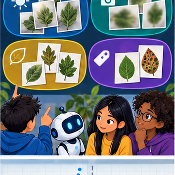
Builder name and experiment date:
Readiness for the connected explanation
What does a confusion matrix omit?
This week’s end goal
By the end, I can explain error analysis using a traced example and a stated limitation.
Student lesson · 2 of 16
Notice the evidence
PICTURE ENTRY
Notice → Predict → Explain
Begin with visible evidence; do not explain more than the picture and information support.
Name three visible details without interpreting them.
Predict the data, model, or evaluation decision being made.
Identify one hidden assumption that could change the result.
State what evidence would confirm or reject your prediction.
My prediction and supporting evidence:
A closer explanation
Error analysis begins with prediction IDs and reference labels. Inspect features, collection conditions and the labelling policy. Do not assume every surprising prediction proves the reference is wrong. Use development errors to propose a change and specify what outcome would support the explanation.
Use fictional classroom data throughout this investigation. Keep the task, units, reference labels and data split visible as you reason. Earlier weeks supplied the model-building process; this week examines error analysis and controlled follow-up.
Student lesson · 3 of 16
See how it works
ML MECHANISM
Input → Model → Evidence
Trace the information, fitted behavior, and evaluation proof separately.
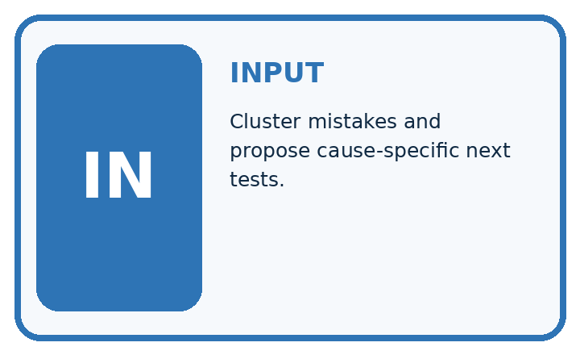
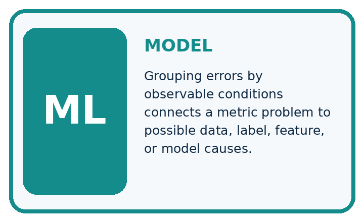
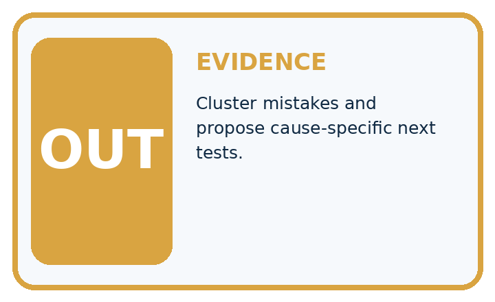
QUESTION Cluster mistakes and propose cause-specific next tests.
MODEL IDEA Grouping errors by observable conditions connects a metric problem to possible data, label, feature, or model causes.
PROOF NEEDED Use an unseen case, visible calculation, error analysis, and a stated limitation.
Draw a fresh data → model → prediction → evaluation trace:
A closer explanation
A validation audit has 12 dim-light cases with 4 errors and 18 bright-light cases with 3 errors. Rates are 4/12=1/3 and 3/18=1/6. Dim lighting is a useful lead, not proof of causation: camera, route or labels may also differ. A planned change uses a training-fitted brightness normalization while keeping split and classifier settings fixed.
old_errors = [4, 3]
new_errors = [2, 4]
counts = [12, 18]
for old, new, n in zip(old_errors, new_errors, counts):
print(old / n, new / n)
print(sum(old_errors), sum(new_errors))
# Total errors fall from 7 to 6; one group worsens.Trace the calculation on paper before running this optional Python check. Use the stated fictional inputs and compare intermediate values. The code checks this example; your independent workbook case uses different evidence.
Connect the picture and the explanation
Point to the input, the deciding step and the result in this week’s visual. Explain the same step in ordinary words. A picture helps when you can say what each part represents.
Student lesson · 4 of 16
Compare the cases
EVALUATION DESIGN
Four Tests, Four Kinds of Evidence
A system is not understood until it survives more than one comfortable example.


NORMAL Expected data and expected behavior.
BOUNDARY Value close to a threshold, ambiguous label, or uncertain prediction.
MISSING Necessary field, label, source, or measurement is unavailable.
SHIFTED New lighting, species, device, subgroup, or time condition.
Which case most threatens today's claim, and why?
Change one thing in the pictured case
Change: Dim errors fall to1/6 in a later same-case replay.
Prediction: The replay’s dim error rate is 16.7%; it is development evidence if those cases guided the revision.
Reason: Observed improvement on reused cases is not an untouched final generalisation test.
Student lesson · 5 of 16
Words that unlock the idea
VOCABULARY
Words You Can Calculate and Defend
A definition matters when it lets you interpret a new dataset, model, or result.
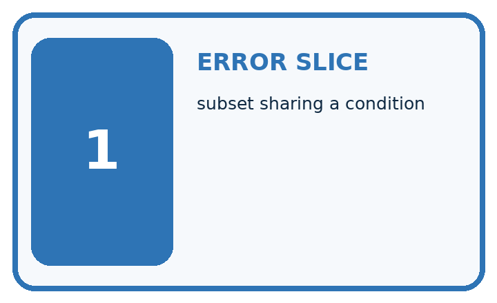
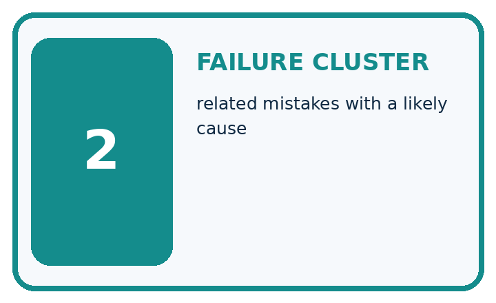
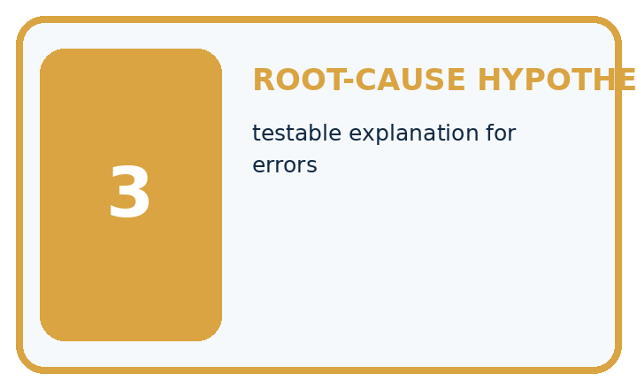
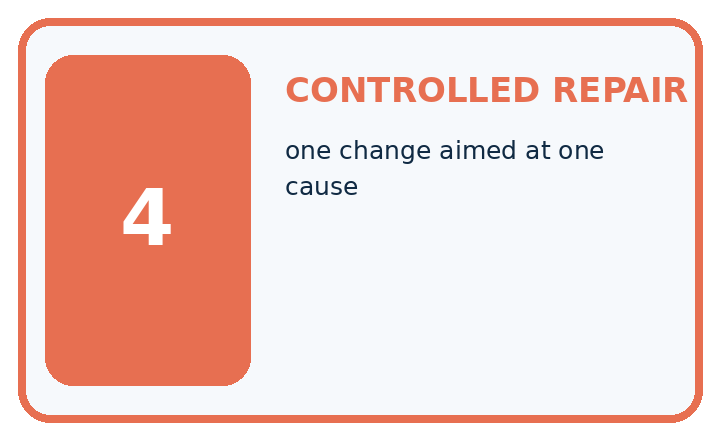
| Term | Precise meaning | My ML example |
|---|---|---|
| error slice | subset sharing a condition | |
| failure cluster | related mistakes with a likely cause | |
| root-cause hypothesis | testable explanation for errors | |
| controlled repair | one change aimed at one cause |
Repair the claim using a definition, calculation, or test record:
Words used in the closer explanation
| Word | Meaning |
|---|---|
| Error analysis | Inspection of mistakes to propose explanations |
| Hypothesis | A testable proposed explanation |
| Controlled comparison | A comparison that changes one planned factor while holding relevant conditions fixed |
| Regression | A new failure introduced by a change |
Student lesson · 6 of 16
Follow a worked example
WORKED EVIDENCE
Reason Step by Step
Predict first. Then check each step. A correct answer without visible evidence cannot be audited.
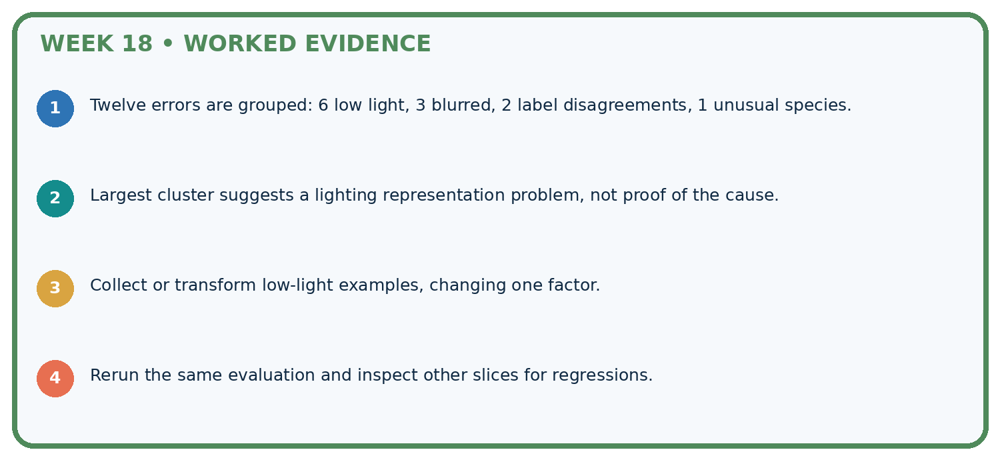
STEP 1 Twelve errors are grouped: 6 low light, 3 blurred, 2 label disagreements, 1 unusual species.
STEP 2 Largest cluster suggests a lighting representation problem, not proof of the cause.
STEP 3 Collect or transform low-light examples, changing one factor.
STEP 4 Rerun the same evaluation and inspect other slices for regressions.
Recalculate, retrace, or restate the evidence independently:
A closer explanation
Error analysis and controlled follow-up at a glance
Learn from the worked case
Cover the result before checking it. Say what is given, choose the procedure, and follow one step at a time. Then uncover the result and explain your first mismatch. Ask why a step is allowed, not only what number it produces.
A pictorial worked case: Error Analysis
Find an error cluster before choosing a controlled follow-up.
The facts we will use
Candidate errors: bright-light photos1/8; dim-light photos3/6. Images and reference labels are fixed for this audit.
All inputs and outcomes in this worked example are invented classroom data; no real model run is claimed.


Read the picture one step at a time
Why this result follows
Read the picture in order. Photograph the same approved toy scene in bright and dim conditions; hold device and framing fixed. The arrows show which recorded input or intermediate result each decision uses. Explain the deciding step aloud before checking the changed case; pointing to the final answer alone does not show how it follows.
What this example does not establish
A slice difference suggests investigation; it does not establish a causal lighting explanation by itself.
Read the labelled picture: What evidence would support the claim that a change helps fresh dim-light images? Point to the relevant step in the picture, then write the changed result and the rule or evidence that supports it.
Change one thing: Dim errors fall to1/6 in a later same-case replay. Predict the result before checking the explanation. What remains the same?
Student lesson · 7 of 16
Find and repair a mistake
ERROR DETECTIVE
Compare → Diagnose → Repair
Do not patch the answer. Find the earliest unsupported assumption, data problem, or experiment error.
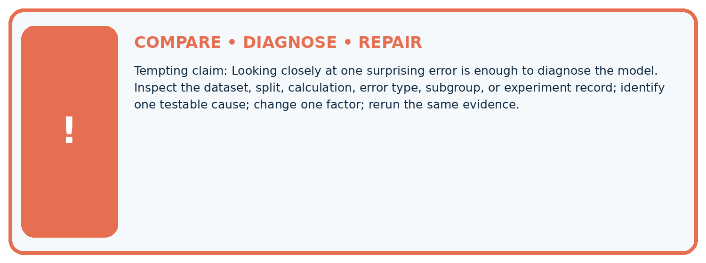
| Evidence record | Expected | Actual | Likely cause / next test |
|---|---|---|---|
| normal case | passes | ||
| boundary case | defined behavior | ||
| missing case | safe fallback | ||
| shifted case | measured limit |
Diagnose one cause and name the cleanest next experiment:
A closer explanation
Do not delete difficult cases to raise the score or reuse final-test errors for an unreported revision. Once test feedback guides a change, treat it as development evidence and obtain a new independent evaluation for a fresh final claim.
Student lesson · 8 of 16
Practise together
ML STUDIO
Specify Before You Run
A trustworthy result can be reproduced from the recorded data, code, settings, and evaluation rule.

Experiment record
QUESTION + intended use + success threshold
DATA version + grouped split + leakage check
CODE/preprocessing + features + model + settings + seed
METRICS + positive class + units + denominators
PREDICTIONS + errors + subgroup slices + limitations
HUMAN reviewer + release, revise, limit, or stop decision
Write the minimum record needed to reproduce today's result:
A closer explanation
Write a change record: hypothesis, exact code/data version, controlled factors, predicted effect, full before/after results and decision. Review disagreements using a consistent annotation policy. If labels are corrected, version the data and rerun all candidates on the same corrected evaluation set.
Practise with less help: Explain the limit
Use workbook W2 for the connected example “Error analysis and controlled follow-up”. First fill the input and rule boxes. Try the middle steps before asking for a hint. After a hint, try the next step yourself.
| Plan | Do | Check |
|---|---|---|
| What is given? Which rule or procedure applies? | Record each intermediate step. | Does the result follow? What remains unknown? |
Explain your trace to a partner. Your partner points to one step to check. Swap roles on the next case. Each person writes their own explanation.
Check your reasoning
Use the worked case for Error analysis and controlled follow-up. Proposed explanation: “A final answer is enough”. Decide whether this explanation is supported. Point to the step or supplied fact that decides; explain your repair if needed.
Answer on your own before discussion. If you are unsure, say which step you need help with.
Explain the picture
What evidence would support the claim that a change helps fresh dim-light images? Point to the relevant step in the picture, then write the changed result and the rule or evidence that supports it.
This is supported practice. Keep the separately named independent case for an attempt before feedback.
Student lesson · 9 of 16
Run the investigation
EVIDENCE LAB
Predict → Run → Calculate → Interpret
Keep the test conditions fixed, record every result, and change only one planned factor.
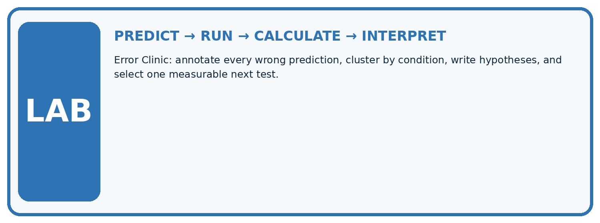
1. Write the hypothesis and expected evidence before running.
2. Error Clinic: annotate every wrong prediction, cluster by condition, write hypotheses, and select one measurable next test.
3. Run one normal, one boundary, one missing, and one shifted case.
4. Calculate the metric from raw counts or row-level errors.
5. Interpret what changed, what did not, and what remains unsafe or unknown.
| Case | Prediction | Actual | Calculation / evidence | Meaning / next test |
|---|---|---|---|---|
| Normal | ||||
| Boundary | ||||
| Missing | ||||
| Shifted |
Plan → try → check
Before trying: what do I expect, and why? While trying: which step could first go wrong? Afterwards: what did I actually observe, and what should change? Keep “not run” if you only traced the procedure.
Student lesson · 10 of 16
Build your understanding
MASTERY
From Knowing the Word to Owning the Idea
Move upward only when you can produce evidence without copying the example.

DEFINE Use all four terms precisely: error slice, failure cluster, root-cause hypothesis, controlled repair.
CALCULATE Reproduce the worked evidence with units and denominator.
TRACE Explain the data, code or decision path.
DIAGNOSE Looking closely at one surprising error is enough to diagnose the model.
TRANSFER Solve a fresh dataset or model case.
IMPROVE Change one cause and rerun fixed evidence.
DEFEND State intended use, metric, limitation, and human responsibility.
Student lesson · 11 of 16
Connect your project
CUMULATIVE PROJECT
Responsible Plant Classifier
Every week adds one reviewable artifact to the same evidence-based capstone.
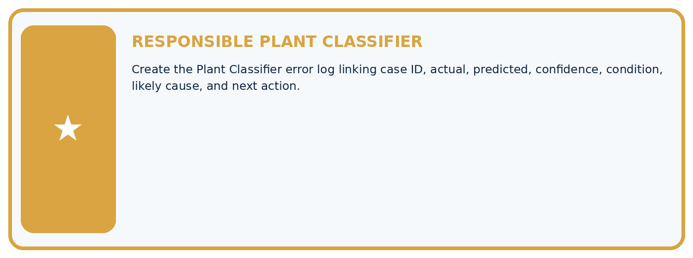
Which requirement or risk does this artifact address?
Which dataset, split, code, and metric version does it use?
What normal and shifted cases were tested?
What remains uncertain or weak?
What decision still belongs to a teacher or qualified human?
My evidence-linked project decision:
Evidence for your project
For your Responsible Plant Classifier, save the input, procedure, observed result and limitation of this check. Label this worked example as practice; use a different, previously unreviewed case when checking independent understanding.
Student lesson · 12 of 16
Show what you know
INDEPENDENT PROOF
Explain • Calculate • Transfer • Defend
Complete this with a fresh case after guided practice and compare it with the mastery criteria.
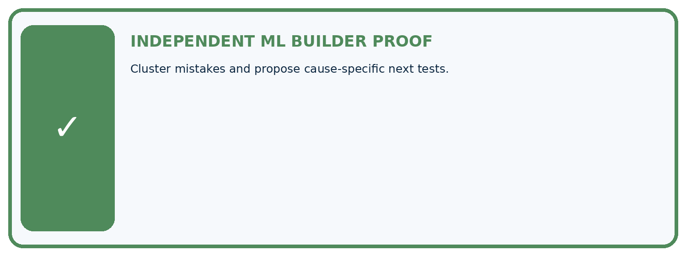
□ Define the task, feature/target roles, and intended-use boundary.
□ Show the calculation, code trace, or experiment record.
□ Test a normal case and one revealing boundary, missing, or shifted case.
□ Diagnose one failure without changing several factors at once.
□ Name a limitation, fairness concern, and the human-review action.
Independent evidence and defense:
My level: □ Not yet □ With one hint □ Independently □ I can teach and defend it
Student lesson · 13 of 16
Study a complete case
Week 18 Worked case
Use the supplied details to practise the weekly concept before attempting the independent question. This case extends the illustrated lesson.
The situation
Four errors occur among five backlit photos; two among twenty ordinary photos.
The question
Compare rates and investigate.
Worked explanation
Backlit error=80%; ordinary=10%. Inspect image quality and confounding differences. Association motivates controlled testing; it does not alone prove cause.
Explain it in your own words
Which detail supports the answer, and why does it matter?
Trace the supplied case visually
Compare error rates, not only error counts
| Evidence or stage | Value or result |
|---|---|
| Backlit errors | 4/5 |
| Ordinary-light errors | 2/20 |
Four errors occur among five backlit photos; two among twenty ordinary photos.
Compare rates and investigate.
Backlit error=80%; ordinary=10%. Inspect image quality and confounding differences. Association motivates controlled testing; it does not alone prove cause.
Student lesson · 14 of 16
Try a new case independently
Independent case: Apply independently
Old errors are 5/10 on route A and 2/20 on B. New errors are 3/10 and 5/20. State total and group changes and a justified next step.
Attempt this case before feedback. Record any help. Earlier examples below are further practice; a case already practised with feedback cannot establish fresh transfer.
Week 18 Independent application
Close the worked explanation. Apply the idea to this different question without copying.
Of eight errors, six are on blurry images and two on clear images. Can you conclude blurry images have a higher error rate without group totals?
My answer, with a trace, calculation or supporting evidence
Create and test
Change one relevant detail. Predict the result before testing. Include a boundary or missing-information case when it helps reveal a limit.
My changed input and expected result
Connect to your project
Create the Plant Classifier error log linking case ID, actual, predicted, confidence, condition, likely cause, and next action.
The evidence I will keep
Your teacher has the independent answer and scoring criteria. Complete the matching workbook week to keep your practice evidence together.
Transfer practice from the original programme
A model fails 6/10 backlit and 2/20 front-lit photos. Compute error rates and design a follow-up that tests lighting rather than leaf identity.
Use feedback to improve
Attempt the independent case before hints. Record whether you worked alone, used a hint or followed a model. After feedback, fix the first unsupported step and explain why it changed. A later check uses a changed case, not a copied answer.
Student lesson · 15 of 16
Your lesson route
Start with this question: Find an error cluster before choosing a controlled follow-up.
| By the end, I can | How I will show it |
|---|---|
| Categorize development errors using evidence | Explain the deciding step, show a trace or test, and state one limit. |
| Design a controlled change with a stated hypothesis | Explain the deciding step, show a trace or test, and state one limit. |
| Preserve failures and test boundaries | Explain the deciding step, show a trace or test, and state one limit. |
Remember → watch and explain → try with help → investigate → try independently → keep project evidence. Your teacher may spread this lesson across several classes.
Keep your first prediction. Compare it with what the evidence shows and explain any change.
Student lesson · 16 of 16
Finish and return
Close your notes. Explain this goal in your own words: Categorize development errors using evidence
If you are unsure, return to the worked picture and explain one arrow. If you are ready, change an input or assumption and justify your prediction.
Save your workbook evidence. At the next review, try a different case before opening your old answer.